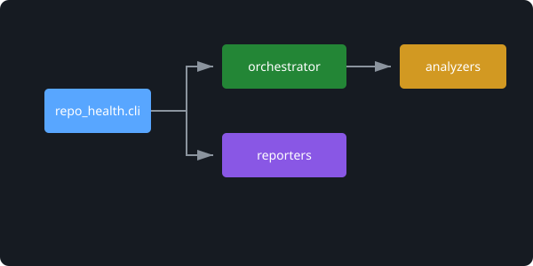

Analyze the health of your repository in seconds.
Repo Health is a static analysis CLI that evaluates repository maintainability by detecting complexity issues, test gaps, dependency cycles, and architectural risks.
Quick Start
Install the cli tool globally via pip.
pip install repo-health
Run it in your repository:
repo-health .
Powerful Features
🎖️ Repository Health Score
Calculates a global 0-100 maintainability score based on structural and logical code quality.
🧩 Complexity Analysis
Detects oversized functions and evaluates cyclomatic complexity across all Python files using
radon.
🔥 Hotspot Detection
Analyzes your Git history to identify the most frequently modified, highly complex files causing technical debt.
🕸️ Architecture Graph
Parses imports, builds an edge graph, and generates an SVG visualization of your internal architecture.
🔄 Dependency Cycle Detection
Finds circular dependencies and import loops before they cause massive runtime or scaling issues.
🚧 Pull Request Analysis
Evaluates only the files modified in your current branch vs. main, strictly
detecting newly added regressions.
Actionable Insights
Repo Health delivers real-time recommendations. Stop spending hours reviewing massive architectures when you can detect the bottlenecks immediately.
- Generates Markdown reports (
--md) - Generates dynamic badges (
--badge) - Returns standard CLI exit codes (
--fail-under 70)
$ repo-health .
╭─ Repository Health Report ─╮
│ Score: 82/100 │
╰────────────────────────────╯
Metrics
-------
Cyclomatic complexity avg: 3.8
Functions > 80 lines: 3
Test ratio: 22%
Issues
------
- 3 functions longer than 80 lines
Visualize Your Architecture
Generate SVG graphs locally with a single command to understand how all sub-modules interact.
repo-health . --graph
